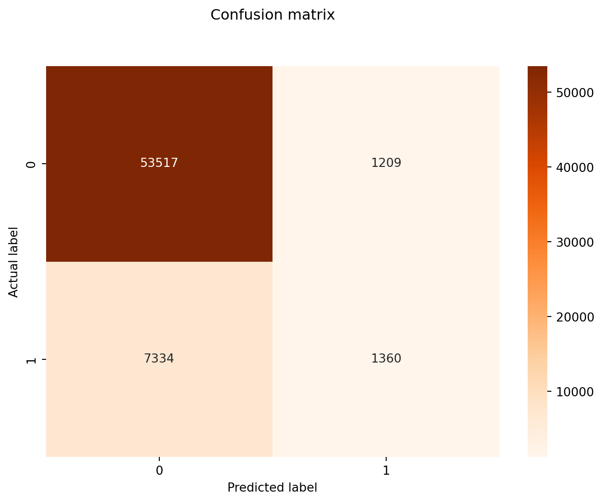

# These are the libraries which we will require:
import pandas as pd
import numpy as np
import matplotlib.pyplot as plt
import seaborn as sns
from sklearn.model_selection import train_test_split
from sklearn.linear_model import LogisticRegression
from sklearn import metrics
from sklearn.metrics import classification_report
from sklearn.metrics import confusion_matrix
from collections import CounterLogistic Regression (Machine Learning)
Machine Learning
Health data
Python
It turns out this this topic is a little bit controversial for some. Some say that logistic regression is a regression model (hence the name), other swear it is a classification model. Well… I’m here to say that both sides are right! Traditionally, logistic regression is a statistical regression model as it gives us the probability of an observation belonging to class. However, if this method is coupled with a ‘decider/threshold’ then it can indeed be turned into a classification method. For instance, lets say our model states that given the data, a specific patient has the estimated probability of 0.55 of belonging to the diabetics class (p = 0.55). We can apply a threshold at 0.5 which classifies patients below this threshold to belong to the non-diabetes class, and those >= 0.5 to belong to the diabetes class, and to be therefore classified as a diabetic. Sci-kit learn library uses 0.5 as a threshold, but there’s nothing to stop you from defining your own value! Let’s take a walk through an example together.
The data
For this dataset we are going to use the CDC Diabetes Health Indicators dataset which I came across on the UCI Irvine Machine Learning Repository. We are also going to program this in Python, due to the libraries we can utilise with it.
Exploratory Data Analysis (EDA)
# Let's load in our data
data_file = "../data/diabetes_binary_health_indicators_BRFSS2015.csv"
df = pd.read_csv(data_file)# Create a function that will give us some useful starting statistics about our dataset
def eda(df):
head = df.head()
shape = df.shape
missing_values = df.isnull().sum()
return head, shape, missing_values
head, shape, missing_values = eda(df)head
# We can see our label, y named 'Diabetes_binary' is the first feature in our dataset | Diabetes_binary | HighBP | HighChol | CholCheck | BMI | Smoker | Stroke | HeartDiseaseorAttack | PhysActivity | Fruits | ... | AnyHealthcare | NoDocbcCost | GenHlth | MentHlth | PhysHlth | DiffWalk | Sex | Age | Education | Income | |
|---|---|---|---|---|---|---|---|---|---|---|---|---|---|---|---|---|---|---|---|---|---|
| 0 | 0.0 | 1.0 | 1.0 | 1.0 | 40.0 | 1.0 | 0.0 | 0.0 | 0.0 | 0.0 | ... | 1.0 | 0.0 | 5.0 | 18.0 | 15.0 | 1.0 | 0.0 | 9.0 | 4.0 | 3.0 |
| 1 | 0.0 | 0.0 | 0.0 | 0.0 | 25.0 | 1.0 | 0.0 | 0.0 | 1.0 | 0.0 | ... | 0.0 | 1.0 | 3.0 | 0.0 | 0.0 | 0.0 | 0.0 | 7.0 | 6.0 | 1.0 |
| 2 | 0.0 | 1.0 | 1.0 | 1.0 | 28.0 | 0.0 | 0.0 | 0.0 | 0.0 | 1.0 | ... | 1.0 | 1.0 | 5.0 | 30.0 | 30.0 | 1.0 | 0.0 | 9.0 | 4.0 | 8.0 |
| 3 | 0.0 | 1.0 | 0.0 | 1.0 | 27.0 | 0.0 | 0.0 | 0.0 | 1.0 | 1.0 | ... | 1.0 | 0.0 | 2.0 | 0.0 | 0.0 | 0.0 | 0.0 | 11.0 | 3.0 | 6.0 |
| 4 | 0.0 | 1.0 | 1.0 | 1.0 | 24.0 | 0.0 | 0.0 | 0.0 | 1.0 | 1.0 | ... | 1.0 | 0.0 | 2.0 | 3.0 | 0.0 | 0.0 | 0.0 | 11.0 | 5.0 | 4.0 |
5 rows × 22 columns
shape
# We have 253,680 individuals and 22 features in total(253680, 22)missing_values
# No missing values have been observed, which means no need to drop or impute any values Diabetes_binary 0
HighBP 0
HighChol 0
CholCheck 0
BMI 0
Smoker 0
Stroke 0
HeartDiseaseorAttack 0
PhysActivity 0
Fruits 0
Veggies 0
HvyAlcoholConsump 0
AnyHealthcare 0
NoDocbcCost 0
GenHlth 0
MentHlth 0
PhysHlth 0
DiffWalk 0
Sex 0
Age 0
Education 0
Income 0
dtype: int64# Let's seperate the data into the feature (independent) variables and the target variable (label)
def prepData (df,
y_label_name):
df = pd.read_csv(data_file)
X = df.loc[:, df.columns != y_label_name]
y = df[y_label_name]
return df, X, y
df, X, y = prepData(df, y_label_name = 'Diabetes_binary')
y0 0.0
1 0.0
2 0.0
3 0.0
4 0.0
...
253675 0.0
253676 1.0
253677 0.0
253678 0.0
253679 1.0
Name: Diabetes_binary, Length: 253680, dtype: float64Defining a training and test set
We are going to the use the train_test_split function from the sci-kit learn library to divide the dataset in a training/test split (75% and 25%, respectively).
We will set the seed arbitrarily to ‘16’ so that we can reproduce this split each time we run the code.
This will result in four arrays: X_train, y_train, X_test, y_test
X_train, X_test, y_train, y_test = train_test_split(X, y, test_size = 0.25, random_state = 16) Applying a logistic regression model
# Let's define a function that applies our chosen model to training and test data
def create_model (X_train,
y_train,
X_test,
model):
model.fit(X_train, y_train)
y_pred = model.predict(X_test)
return y_pred
# Instantiate the logistic regression model with enough iterations for convergence
model = LogisticRegression(random_state = 16, max_iter = 500)
# now let's run the function
y_pred = create_model(X_train, y_train, X_test, model = model)
# Here are our predicted values for y!
Counter(y_pred) # Class 1: 60851; Class 2: 2569Counter({np.float64(0.0): 60851, np.float64(1.0): 2569})Model performance
Confusion matrix
Let’s visualise how well our model was able to predict the class labels using a confusion matrix
cnf_matrix = metrics.confusion_matrix(y_test, y_pred)
cnf_matrixarray([[53517, 1209],
[ 7334, 1360]])Let’s create a nice visual heatmap
def makeHeatmap (class_names, cnf_matrix):
fig, ax = plt.subplots()
tick_marks = np.arange(len(class_names))
plt.xticks(tick_marks, class_names)
plt.yticks(tick_marks, class_names)
sns.heatmap(pd.DataFrame(cnf_matrix), annot=True, cmap= "Oranges" ,fmt='g')
ax.xaxis.set_label_position("bottom")
plt.tight_layout()
plt.title('Confusion matrix', y=1.1)
plt.ylabel('Actual label')
plt.xlabel('Predicted label');
makeHeatmap(class_names = [0,1], cnf_matrix = cnf_matrix)
def calcPresRecall (y_test, y_pred, target_names):
report = classification_report(y_test, y_pred, target_names = target_names)
return report
report = calcPresRecall (target_names = ['without diabetes', 'with diabetes'],
y_test = y_test,
y_pred = y_pred)
print(report) precision recall f1-score support
without diabetes 0.88 0.98 0.93 54726
with diabetes 0.53 0.16 0.24 8694
accuracy 0.87 63420
macro avg 0.70 0.57 0.58 63420
weighted avg 0.83 0.87 0.83 63420
Accuracy
First of all a note on accuracy: accuracy can be described as the correction predictions out of the total number of observations (taking both/all classes into account) (TP + TN / TP + FP + TN + FN). So in this case: how many actual diabetics did classify as diabetic and how many non-diabetics did we classify as non-diabetic?
Typically, a classification rate of 80% is regarded as “good”. However, the accuracy metric has a limitation; it doesn’t capture the false positives, or false negatives for that matter. In other words, how many observations did you misclassify? This is why we are going to look at precison and recall.
Precision
Precision = out of all people that were classified as diabetic, the percentage who were truly diabetic (TP / TP + FP). When this logistic regression model predicts that an individual is free from from diabetes, that prediction is correct 88% of the time.
Recall
Recall in this example means, out all truly diabetic people, how many of them did we correctly classify? (TP / TP + FN). The true positive rate is synonymous with recall. If there are patients who have diabetes in the test set, this logistic regression model can identify it 16% of the time. This is really quite low!
However, remember that there is a trade off between precision and recall. The more precise we become, the lower the recall. The greater recall, the lower the precision.
F1 score
The F1 score is the harmonic average between precision and recall. You optimise the F1 metric to get a healthy balance between precision and recall. Which could be a problem when trying to classify with an imbalanced dataset. For instance, where there is a minority class, for instance a small amount of observations that you would like to identify.
ROC curve
Sensitivity is the probability of detecting a TP from all positive observations (TP / TP + FN). In other words, a specificity of 80% will mean that we will identify 80% of people that are diabetic, but we will miss the other 20%. This is also called the true positive rate and is also known as recall!
Specificity is the probability of correctly identifying those without the disease. This means we will be able to correctly identify individuals without the disease but will misclassify the others (TN / TN + FP). This is also called the true negative rate.
Let’s have a look at an ROC curve for our data.
def plotROC (X_test, y_test, model):
y_pred_proba = model.predict_proba(X_test)[::,1]
fpr, tpr, _ = metrics.roc_curve(y_test, y_pred_proba)
auc = metrics.roc_auc_score(y_test, y_pred_proba)
plt.plot(fpr,tpr,label="data 1, auc="+str(auc))
plt.legend(loc=4)
plt.show()
plotROC(X_test, y_test, model)So all in all the model works well with detecting those without diabetes, but the precision and recall for detecting individuals with diabetes, well, that could be very much improved! This is the challenge that we face when working with such unbalanced datasets which is typical with health-related datasets. Let’s investigate more on how other models deal with this problem and how we can fine tune the hyper parameters, for a model with more precision and a better capability to recall.
References
UCI: (https://archive.ics.uci.edu/dataset/891/cdc+diabetes+health+indicators)
The Hundred Page Machine Learning Book, by Andriy Burkov: https://github.com/lyric12345/The-Hundred-Page-Machine-Learning-Book-by-Andriy-Burkov
Remember precision and recall forever: https://www.youtube.com/watch?v=qWfzIYCvBqo